AI Website Builder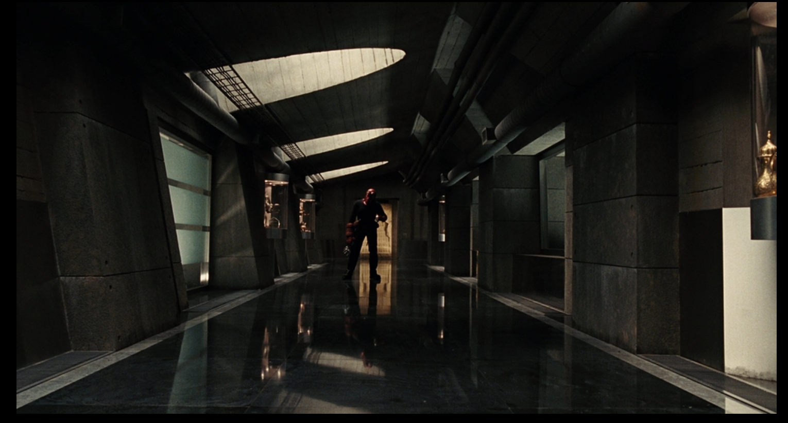
这是对称构图因为走廊的墙面 ，地面和天花板都围绕中轴线左右对齐 ，形成明显的镜像结构；人物也位于画面中央 ，使视觉重心稳定统一。整体呈现出强烈的秩序感和集中感。
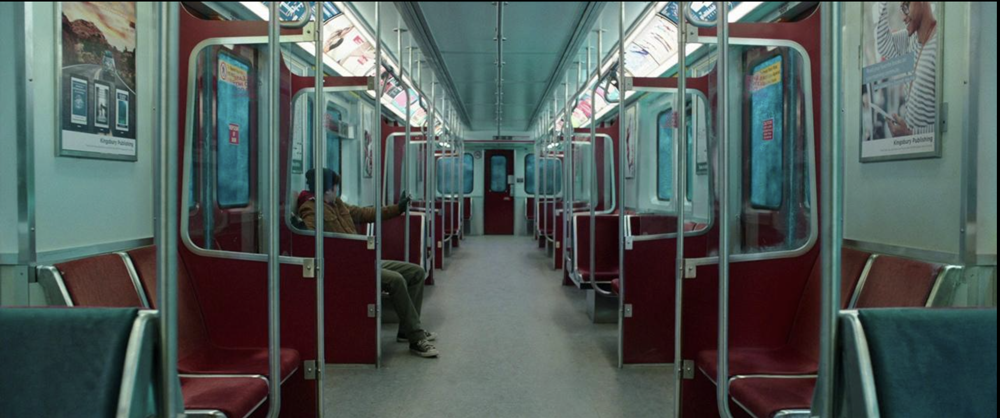
这是对称构图因为画面以车厢中间的过道为中轴线，左右两侧的座椅、扶手、门和广告几乎镜像排列，形成强烈的左右平衡 ，连透视线（地面、天花板）也都向中心汇聚。这种对称让画面显得非常稳定、规整，同时也增强了孤独和压抑的氛围（人物被“夹”在中间）
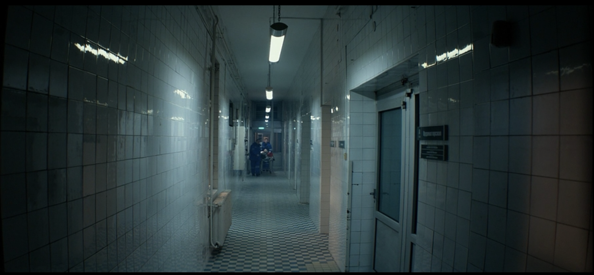
这是对称构图，因为走廊的墙面、地面和灯光都围绕中轴线排列，形成明显的左右平衡结构，视觉自然集中到中间的深处人物。整体给人一种规整、压迫且有秩序的感觉。
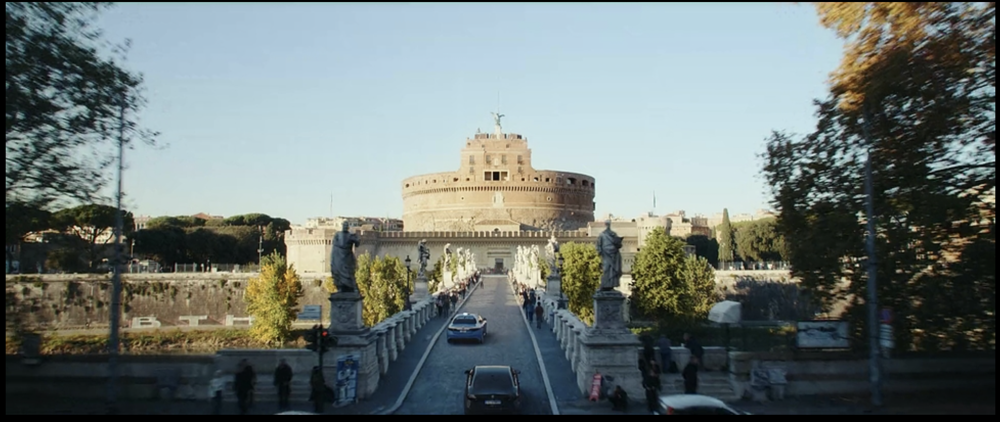
这是对称构图，因为桥梁、雕像和道路都围绕画面中轴线左右展开，形成明显的镜像平衡；主体建筑位于正中央，使视觉稳定集中，增强了画面的秩序感和庄重感。
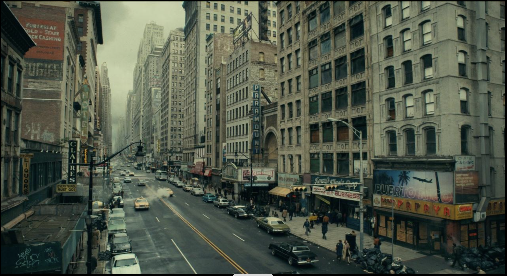
这张图属于引导线构图因为画面中的道路 ，车道线以及两侧建筑边缘都从前景延伸并汇聚到远方 ，形成明显的视觉引导线 ，把观者的视线自然引向画面深处的消失点。
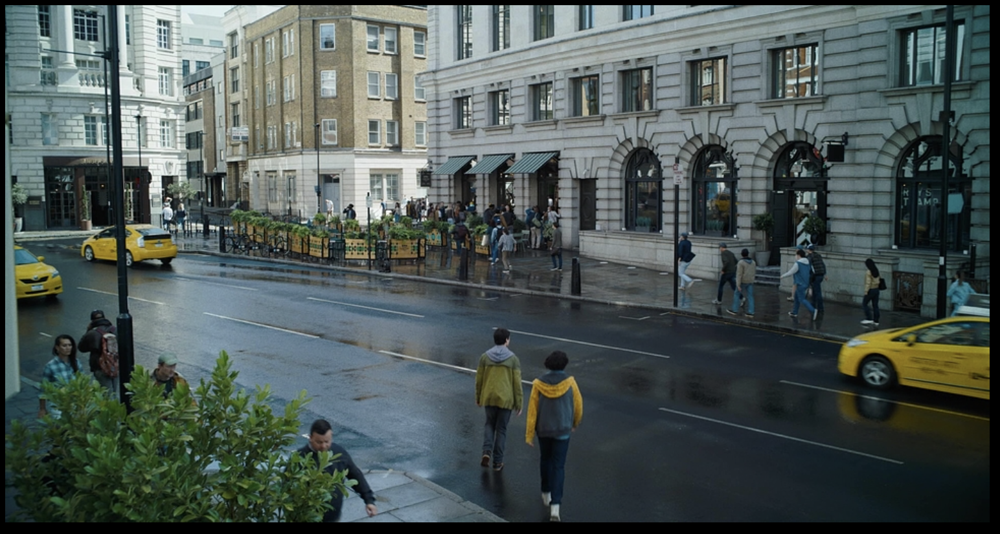
这是引导线构图，因为道路的边缘、车道线以及人行道都形成清晰的线条，把视线从前景自然引向画面中间的人物和远处的人群。这种线条引导让画面更有方向感和空间深度。
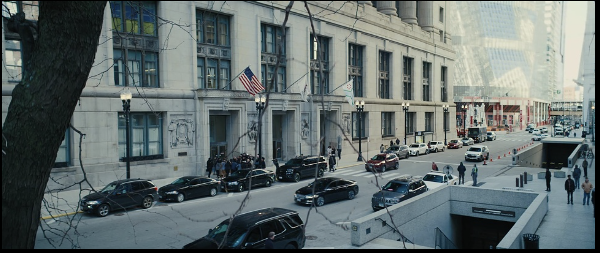
这是引导线构图，因为道路、路边车辆和建筑边缘形成连续的线条，把视线从前景自然引向远处的街道深处和人群。这样的线条引导增强了画面的空间感，也让视觉有明确的方向
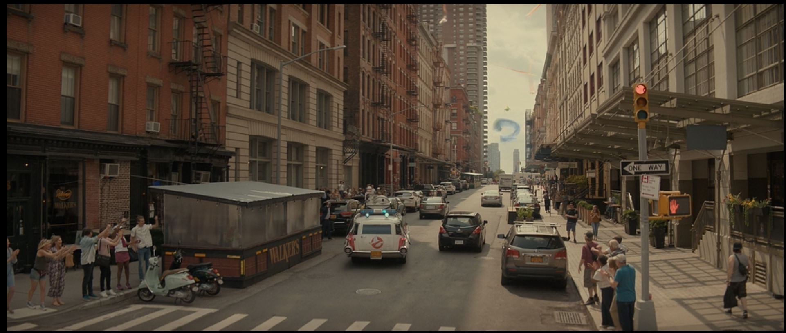
这是引导线构图，因为道路、车道线以及两侧建筑形成明显的透视线，把视线从前景自然引向画面中央和远处街道尽头，使主体更加突出，同时增强空间深度感。
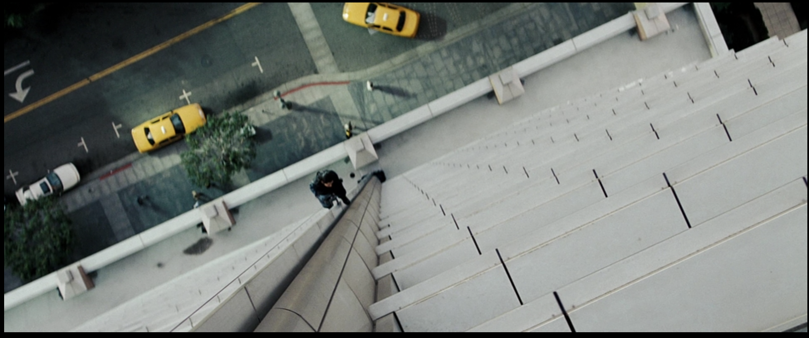
这是标准的Bird Eye View ，因为镜头几乎垂直向下拍摄，地面成为主要视觉平面，人物和车辆被压缩成图形化元素，同时强化了高度感和人物的渺小感。
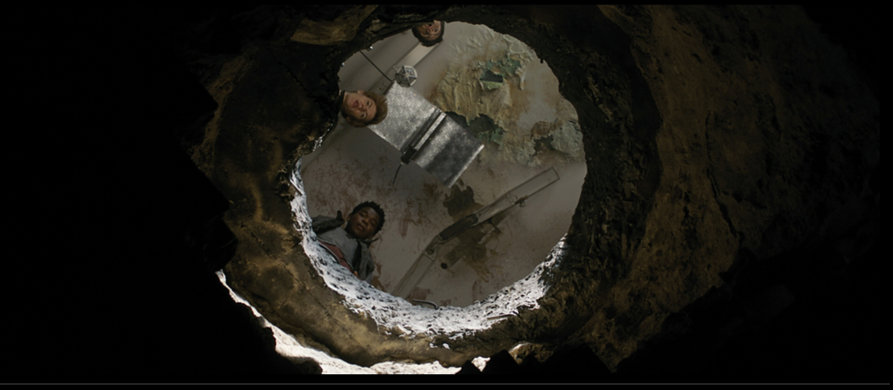
这是顶视构图因为镜头从下往上对准洞口，形成明显的垂直视角，人物围绕洞口向下看，强化了空间的上下关系。同时洞口作为圆形边框，把人物“框住”，让画面更有压迫感和聚焦感。
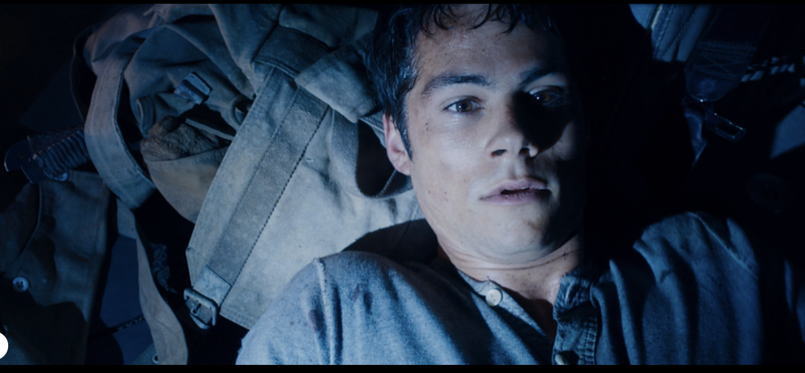
这张是俯视构图(Top-down)。镜头从上方直接看向人物，人物躺在地上，被压在画面里，形成明显的“上对下”关系。这种角度会让人物显得脆弱 , 被动 , 受困 , 同时画面贴得很近（特写），进一步强化紧张和压迫感。
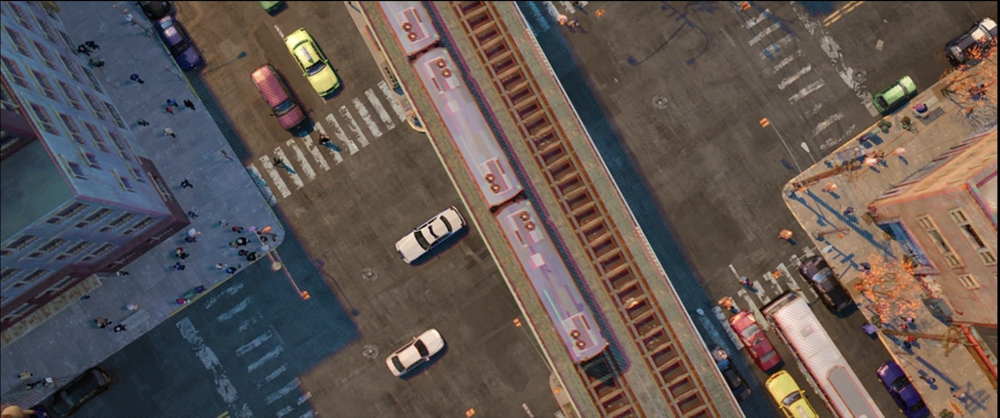
这张是俯视构图(Top-down)。镜头从高空垂直向下拍摄，呈现出街道与轨道的整体结构；同时轨道形成一条明显的引导线，把视线带向画面中间，使画面既有秩序感又有动感。
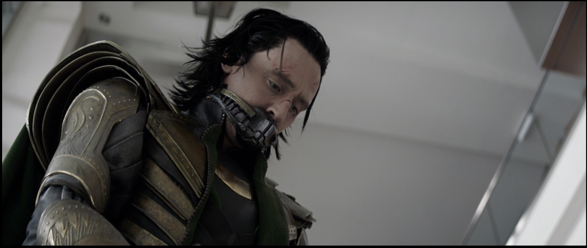
这是低角度构图。镜头从下方向上拍摄人物，使角色俯视镜头，形成明显的“上对下”关系。这种角度让人物显得更强势、压迫、有控制力，也增强了紧张感和威胁感。
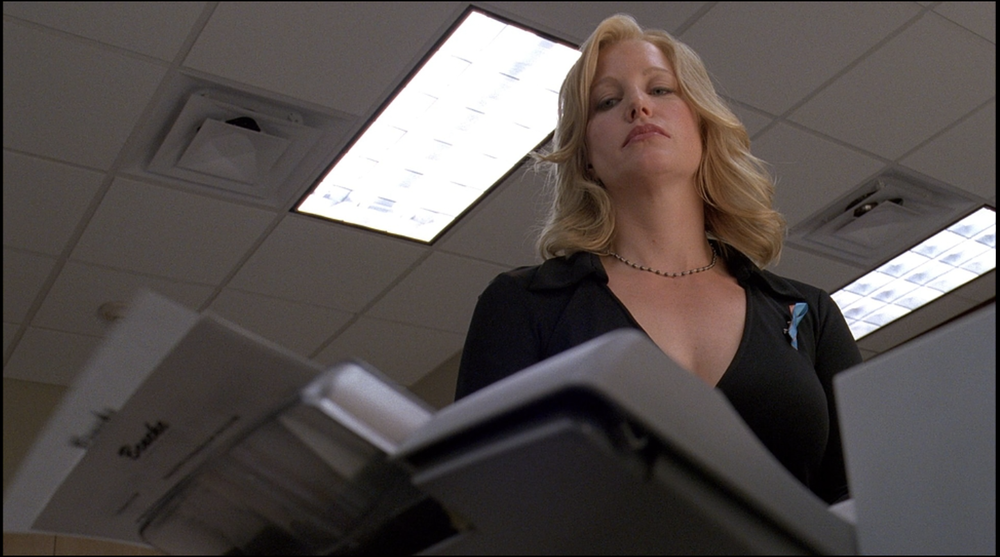
这是低角度构图。镜头从下方向上拍摄人物，使角色俯视镜头，形成明显的“上对下”关系。这种角度让人物显得更强势、压迫、有控制力，也增强了紧张感和威胁感。
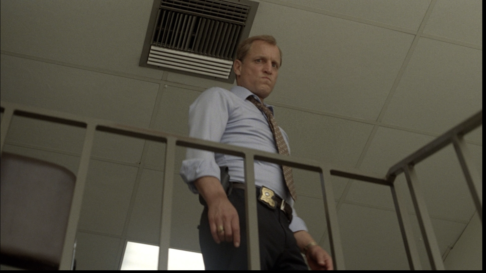
镜头从下方往上拍，人物从高处俯视镜头，形成明显的上下权力关系。这种角度让人物显得更强势、有压迫感，同时也增强了紧张和对峙的氛围。
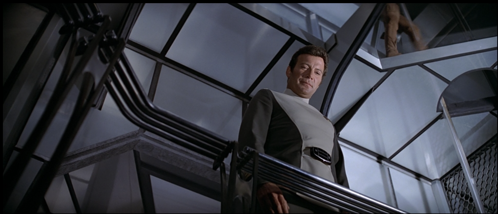
这是低角度构图，因为镜头从下方向上拍摄，人物站在高处俯视画面，形成明显的上下关系。这种角度让人物显得更有权威、掌控局面，同时增强了压迫感和戏剧张力。
AI Website Builder